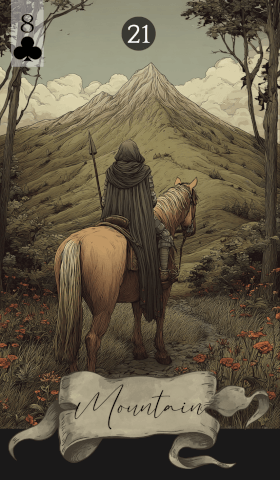

第 21 张 · 梅花 8
高山
阻碍
延迟
难题
僵局
阻力
高山横在你的路上，是一种沉重而分明的存在，象征阻碍与延宕。这张牌谈的是你正面对的难题，也提醒你在跨越它之前，需要耐心，也需要办法。
免费抽牌 →
高山横在你的路上，是一种沉重而分明的存在，象征阻碍与延宕。这张牌谈的是你正面对的难题，也提醒你在跨越它之前，需要耐心，也需要办法。
免费抽牌 →高山是一张关于阻碍的牌，代表那些让你慢下来的重大障碍。它要求韧性与决心，提醒你并非每条路都一开始就通畅好走。这张牌暗示：眼下的进展或许停滞，但只要撑住，横在前面的东西终会被跨过去。
无论高山指的是外部环境还是内心的挣扎，它出现时都要求你先认清前方的难处，再谋定而后动。它可能是繁琐的手续、心里的恐惧，也可能是一个难缠的对手。高山并非不可翻越，但要翻过去，得靠力气，也得靠不松劲。
在感情与关系中，高山意味着阻塞与拖延。你可能正卡在原地，面对误会，或是某些需要处理的情感隔阂。对单身者而言，它或许意味着新的关系要等一等才能开花。想越过这些坎，得靠坚持，也得靠把话说开。
在工作上，高山提示职业道路上的阻碍。项目可能停滞，升迁可能推迟，竞争也可能相当激烈。把这看作一个信号：该重新检视你的策略，把做法打磨得更细。只要有耐心、肯下功夫，这些职场难题总能找到出路。
高山建议你耐住性子，也别停下脚步。阻碍是真实存在的，但它们不会一直在那里。把难处当成成长的机会，做好重新调整策略的准备。这张牌鼓励持续而稳定的用力，提醒你：只要时间够、心不散，路上的障碍终会被翻过去。
高山与周围牌的互动，会说清你面对的阻碍究竟是什么性质，也让你看见这些难处会以怎样的方式出现在生活里。
传统牌面上，高山是一座高大逼人的山峰——既是自然的壮阔，也是它所横下的难关。它象征耐力，也象征一个事实：有些路本就崎岖难行。在雷诺曼中，高山既是实在的路障，也是隐喻意义上的阻碍，指向生活里任何一道重大的坎。